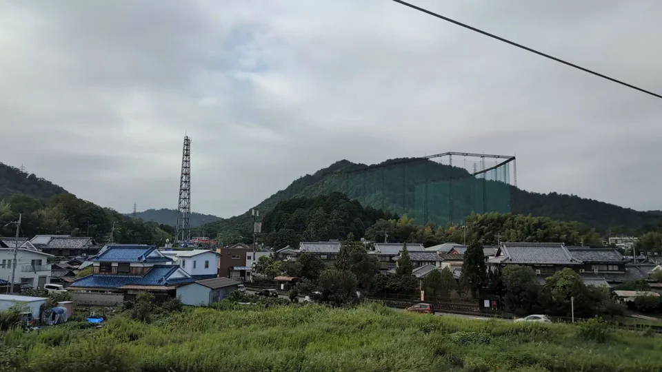
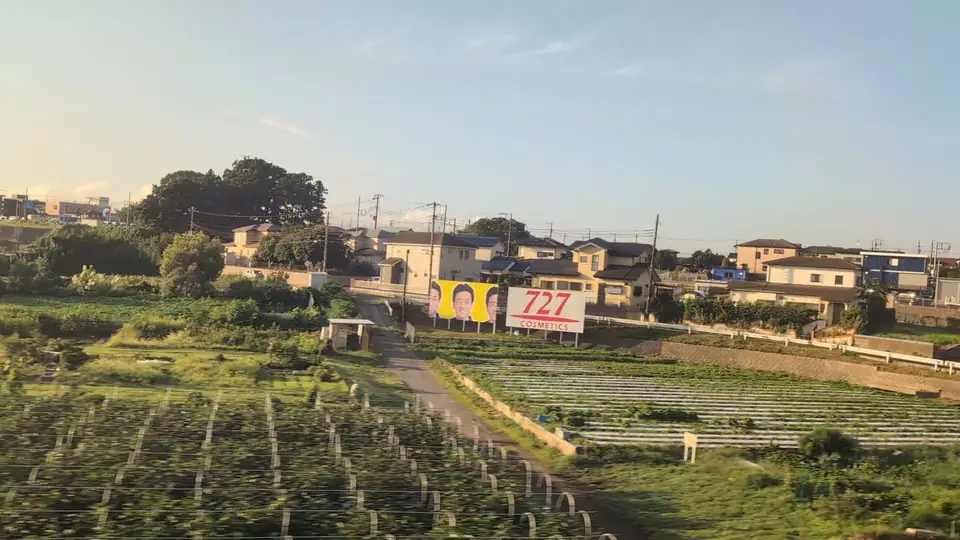

01 / JAPAN IM ALLTAG
Beginnen Sie mit der Form, an die Sie sich erinnern
Diese Dinge wurden nicht als Sehenswürdigkeiten für den Zug aufgestellt. Es sind bewirtschaftete Felder, Fabriken, Sportanlagen und heilige Zeichen: alltägliche Teile Japans, die beim Vorbeifahren überraschend wirken.

Was sind diese leuchtend grünen Reihen?
Die AntwortShizuokas Teefelder
Teesträucher werden zu langen, abgerundeten Hecken geschnitten, die dem Auf und Ab der Hügel folgen. Im Frühling färben die ersten jungen Blätter die Felder leuchtend gelbgrün: eine der typischen Landschaften Shizuokas.
Schauen Sie noch einmal hin. Und die Ventilatoren? Die Propeller über den Reihen dienen dem Frostschutz. In kalten Frühlingsnächten blasen sie die vergleichsweise wärmere Luft zu den empfindlichen jungen Knospen hinunter.

Warum stehen unterhalb des Fuji so viele Schornsteine?
Die AntwortDie Papierfabriken der Stadt Fuji
Fuji ist eine der großen Papierstädte Japans. Ihre Fabriken entstanden dank des reichlichen Grundwassers vom Berg Fuji und des Brauchwassers aus dem Fluss Fuji. Die auffälligen weißen Fahnen sind Dampf aus einer arbeitenden Industrielandschaft.
Schauen Sie noch einmal hin. Schauen Sie nach dem Fuji weiter auf der Seite von Sitz E. Etwa eine Minute vor Shin-Fuji weichen die Felder im Vordergrund Schornsteinen, Tanks und Rohrleitungen.

Was sind diese langen silbernen Dächer?
Die AntwortGewächshäuser in der Agrarlandschaft von Ost-Mikawa
Diese in Japan oft „Vinylhäuser“ genannten Gewächshäuser führen in eine Region mit Tomaten, Mandarinen, Kräutern und Blumen. Was in jedem Haus wächst, bleibt verborgen. Doch die silbernen Dächer, das Bewässerungswasser und das rote Mandarinenschild erzählen eine Geschichte.
Schauen Sie noch einmal hin. Gamagoris Gewächshausmandarinen kommen im Frühling und Sommer auf den Markt. Anderswo in Aichi steuern Gärtner mit Licht die Blütezeit von Chrysanthemen. Entdecken Sie die Arbeit hinter Japans Lebensmitteln und Blumen.

Was sind diese riesigen grünen Netze?
Die AntwortEine Golfabschlaganlage, auf Japanisch uchippanashi
Die Netze halten Golfbälle von benachbarten Häusern und Straßen fern. In japanischen Städten liegen die Abschlagplätze vieler Anlagen auf zwei oder drei Etagen. So kann ein Golfübungsplatz wie ein riesiger Käfig aussehen.
Schauen Sie noch einmal hin. Diese Anlage zieht zwischen Maibara und Kyoto an Sitz E vorbei, mit Ziegeldächern davor und einem bewaldeten Hügel dahinter. Solche Anlagen gibt es nicht nur in Japan, hier gehören sie aber zum Stadtbild. Uchippanashi (打ちっぱなし) bedeutet ungefähr „immer weiter schlagen“.
Golfabschlaganlagen in Japan ↗Ein Erstbesucher fragt, was das ist ↗

Warum steht ein riesiges rotes Tor in den Feldern?
Die AntwortDas große Torii von Nangu Taisha
Ein Torii kennzeichnet den Zugang zu einem Shinto-Schrein. Dieses steht etwa einen Kilometer vom eigentlichen Nangu Taisha entfernt über einer Straße und kündigt den Eingang lange vor dem Heiligtum an.
Schauen Sie noch einmal hin. Mit mehr als 21 Metern Höhe zieht es zwischen Gifu-Hashima und Maibara an Sitz A vorbei. Durch das niedrige Ackerland ringsum wirkt das rote Tor noch größer.
02 / KINTETSU · NARA UND MIE
Palastgelände und riesige Statuen an Kintetsu-Strecken
Diese beiden Ausblicke liegen an den konventionellen Bahnstrecken von Kintetsu, nicht am Tokaido-Shinkansen. Prüfen Sie die unten genannte Strecke und Lage: Die Shinkansen-Zeiten und Sitzhinweise dieser Website gelten hier nicht.
奈良の車窓から。#平城宮跡 #朱雀門 #近鉄
— @fuku_musuko Original post
Ein rotes Tor und ein Palast hinter den Gleisen?
Antwort: Suzaku-Tor und Daigokuden-Halle im Heijo-Palast
Die Kintetsu-Nara-Linie durchquert das Gelände des Heijo-Palasts. Richtung Kintetsu-Nara sehen Sie rechts das Suzaku-Tor und links in der Ferne die Daigokuden-Halle. Beide Gebäude sind Rekonstruktionen. Die Bahn wurde 1914 eröffnet, lange bevor das Palastgelände Teil einer Welterbestätte wurde.
近鉄榊原温泉口駅から見える、今日のルーブル彫刻美術館。
— @Haatainen Original post
Eine goldene Kannon und eine riesige geflügelte Statue?
Antwort: Daikannonji-Tempel und Louvre-Skulpturenmuseum
Die 33 Meter hohe goldene Kannon gehört zum Daikannonji-Tempel. In der Nähe zeigt das Louvre-Skulpturenmuseum riesige Freiluftstatuen der Nike von Samothrake und der Venus von Milo. Sie liegen neben der Kintetsu-Osaka-Linie beim Bahnhof Sakakibara-onsenguchi. Beide Orte sind vom Bahnhof auch zu Fuß erreichbar.
Daikannonji-Tempel (Japanisch) ↗Louvre-Skulpturenmuseum (Japanisch) ↗
Erinnern Sie sich an ein 727-Schild?

Vergleichen Sie das Foto und suchen Sie dann auf der Karte oder in der Standortliste, wo Sie das Schild gesehen haben.
Wählen Sie für die Ausblicke am Tokaido-Shinkansen Ihren Zug, um die voraussichtlichen Durchfahrtszeiten zu sehen. Oder stöbern Sie im vollständigen Reiseführer nach Burgen, Schildern, Flüssen und mehr.
Über diese Ausblicke
Unsere Fotos zeigen Ausblicke vom Tokaido-Shinkansen. Die Zeitangaben sind Schätzungen auf Nozomi-Basis; schauen Sie etwas früher hinaus. Der gesonderte Kintetsu-Abschnitt verwendet die originalen X-Videos mit Urheberangaben. Beim Laden eines Videos wird eine Verbindung zu X hergestellt; Sie können auch den Originalbeitrag öffnen. Kintetsu-Ausblicke sind nicht in der Shinkansen-Zeitleiste enthalten.